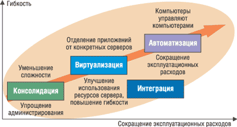

Владислав Шаров
На Европейском Форуме IDC в прошлом году технический директор Fujitsu Siemens Computers (http://www.fujitsu-siemens.com) доктор Джозеф Регер, высказываясь по поводу существующего ныне мнения о том, что "информационные технологии не имеют большого значения", в частности, особо подчеркнул, какую большую выгоду могут принести информационные технологии благодаря тому, что с их помощью удается внедрять инновации в производственную деятельность предприятий. И это не только материальная прибыль. Сегодня компании все больше внимания уделяют глобальным стратегиям развития и освоению новой продукции, решений и услуг. ИТ-менеджеры и ИТ-подразделения нуждаются в помощи для того, чтобы пользователи их услуг смогли получить преимущества от оптимизации информационной инфраструктуры.
По словам д-ра Регера, если компании стремятся сократить полную стоимость владения, информационную инфраструктуру необходимо развивать в контексте повышения эффективности производственной деятельности, ускорения бизнес-процессов и поддержания целостности бизнеса. Чтобы достичь этой цели, подчеркнул он, необходимо знать, как определенные решения могут помочь компаниям снизить стоимость их инфраструктуры и облегчить внедрение инноваций в производственную деятельность в целом. Компании должны сконцентрироваться на трех ключевых технологиях: виртуализации, автоматизации и интеграции. Они позволят упростить информационную инфраструктуру, изменять ее конфигурацию в зависимости от выполняемых задач, а также создадут возможности для автономной работы. В результате можно будет добиться существенного сокращения совокупной стоимости владения, убежден доктор Регер.
Стратегия TRIOLE
Группа компаний Fujitsu, в которую входят Fujitsu (Япония/Океания), Fujitsu Computer Systems (Северная Америка), Fujitsu Services (EMEA) и Fujitsu Siemens Computers (EMEA), разработала свою глобальную стратегию совершенствования и внедрения продуктов, решений и услуг для оптимизации ИТ-инфраструктуры. Эта стратегия, названная TRIOLE, в первую очередь предназначена для снижения совокупной стоимости владения (Total Cost of Ownership, TCO) и предоставления группам разработчиков дополнительных возможностей для создания инновационных предложений, повышающих эффективность, скорость реакции и непрерывность бизнеса. TRIOLE также составляет часть долгосрочного плана Fujitsu Siemens Computers в сфере критически важных для бизнеса вычислений (Business Critical Computing, BCO) и охватывает широкий диапазон линеек продуктов ведущего европейского поставщика ИТ-решений уровня серверов, мэйнфреймов, систем хранения и промежуточного уровня.
По мнению руководства корпорации, обладая более чем 25-летним опытом работы в сфере ИТ, начиная от уровня мэйнфреймов и заканчивая промышленными инфраструктурами, Fujitsu Siemens Computers накопила множество знаний по технологиям развертывания и управления сложными ИТ-инфраструктурами и решениями. Теперь можно сочетать накопленный опыт с новыми лучшими в своем классе технологиями и предоставлять адаптированные ИТ-решения, помогающие снизить совокупную стоимость владения, улучшить уровень обслуживания и увеличить прибыльность бизнеса.
Собственно, стратегия TRIOLE и являет собой ответ на сложности ИТ-бизнеса. Потребителям часто приходится решать следующие непростые задачи: как увеличить эффективность ИТ при том, что требуется "сделать больше за меньшие деньги", как адаптировать существующую ИТ-инфраструктуру к меняющимся потребностям бизнеса и как наилучшим образом обеспечить непрерывность бизнеса.
Стратегия TRIOLE базируется на трех основных технологиях, касающихся следующих аспектов: виртуализация, автоматизация и интеграция (рис. 1). В данном случае виртуализация означает отделение приложений и данных от выделенных систем. Под автоматизацией подразумевается автоматическая адаптация к изменениям ИТ-среды. И наконец, интеграция определяет скорость, дешевизну и низкие риски при развертывании данных технологий. В результате пользователи получают более гибкую среду.
|  | Рис. 1. Компоненты стратегии TRIOLE.
|
Немаловажно и то, что стратегия TRIOLE использует уже существующие решения. Интеграция собственных предложений Fujitsu Siemens Computers с ведущими продуктами в области программного, аппаратного обеспечения и предоставления услуг, а также интеграция партнеров - важнейший элемент данной стратегии, обеспечивающий максимальное качество. Уже сегодня TRIOLE предоставляет полный набор продуктов и решений, гарантируя тем самым немедленную отдачу.
Один из примеров использования стратегии TRIOLE для виртуализации - решение FlexFrame for mySAP Business Suite. Совместная разработка Fujitsu Siemens Computers, Network Appliance и SAP, FlexFrame - это первая реализация концепции адаптивных вычислений в SAP на основе инициативы SAP NetWeaver. В этом решении устаревшая среда, состоящая из множества выделенных сложных серверов, заменяется на модульную концепцию, включая оборудование с поддержкой современной технологии критически важных для бизнеса вычислений, например, серверы Primergy на базе Intel (в том числе и блейд-серверы) и устройства хранения Network Appliance. Решение FlexFrame упрощает ИТ-инфраструктуру и одновременно реализует подготовку оборудования к работе по запросу и другие функции автоматизации, снижающие TCO.
Еще одним примером виртуализации может служить виртуальный ленточный массив CentricStor, позволяющий подключать множество серверных платформ к системам резервного копирования напрямую и единообразно. Снижая время простоя сервера за счет гораздо более быстрой процедуры резервирования, CentricStor улучшает продуктивность работы пользователей. Высокая степень автоматизации процесса резервного копирования означает меньшие затраты на администрирование.
Что касается автоматизации, крупные фермы самоустанавливающихся блейд-серверов Primergy ("ИТ управляет ИТ") позволяют развертывать несколько сотен серверов в течение часа.
TRIOLE предлагает ключевой вариант быстрой интеграции компонентов ИТ-инфраструктуры - с помощью комплексного набора ПО промежуточного уровня openSEAS, ведущего в отрасли средства. Оно дает возможность интегрировать устаревшие системы и приложения с новыми решениями, а также с Web- и мобильными компонентами. За счет этого можно быстрее вносить изменения в ИТ-инфраструктуру, в то же время защищая уже сделанные инвестиции.
Использование TRIOLE подразумевает и поддержку будущих ИТ-инфраструктур. Ключевой элемент данной стратегии - четкая схема прогнозирования будущих решений и продуктов, обеспечивающая дополнительную эффективность, скорость реакции бизнеса и надежность всех составляющих ИТ-инфраструктуры. Чтобы бизнес мог реагировать на изменения еще быстрее, группа компаний Fujitsu также планирует представить структурированный процесс для предварительного тестирования типичных строительных блоков ИТ-инфраструктуры в лабораториях и их документирования в пригодном для повторного использования виде. Это позволит потребителям и партнерам ускорить развертывание ИТ-инноваций. Все эти разработки преследуют четкую цель: снижение эксплуатационных расходов и рабочей нагрузки с одновременным предоставлением потребителям дополнительных средств и возможностей для быстрого реагирования на меняющиеся требования бизнеса.
В этом году Fujitsu Siemens Computers продемонстрировала основные решения и представила важнейшие компоненты для построения динамического центра обработки данных. В таком центре все аппаратные вычислительные ресурсы и устройства хранения данных объединены в пулы и выделяются для использования по запросу. Назначение ресурсов для сервисов происходит автоматически на основании предопределенных правил. Если в систему входят новые пользователи, поступают запросы на увеличение вычислительной мощности или дискового пространства, все действия по динамическому выделению необходимого ресурса выполняются автоматически. Полностью динамический центр обработки данных пока еще остается концепцией, но Fujitsu Siemens Computers стала первой компанией, предложившей ряд реализаций этой концепции, доступных в клиентских центрах обработки данных. В рамках стратегии TRIOLE, направленной на оптимизацию ИТ-инфраструктуры, Fujitsu Siemens Computers совместно со своими партнерами разрабатывает первые образцы продукции и решения, которые можно использовать как компоненты для построения динамического центра обработки данных. Эти компоненты разрабатываются на базе самых современных технологий виртуализации и автоматизации. Базируясь на TRIOLE, эти компоненты будут легко интегрироваться в существующие ИТ-инфраструктуры и в то же время станут основой для динамического центра обработки данных будущего. Применяя технологии виртуализации и автоматизации для серверов под управлением Solaris, Linux, Windows и BS2000, а также для самых современных систем хранения данных, можно достичь самых высоких уровней эффективности, гибкости и надежности.
FlexFrame 3.1 для PrimePower
Весной этого года Fujitsu Siemens Computers расширила свое решение FlexFrame для создания ИТ-инфраструктуры добавлением поддержки ОС Solaris. Это событие открыло дорогу для развития распределенных вычислений и стало следующим логическим шагом в реализации стратегии компании, нацеленной на создание комплексных ИТ-решений. В этом контексте адаптивные вычисления можно рассматривать как дополнительное качество распределенных вычислений. Еще одно расширение FlexFrame, направленное на ускорение продвижения передовых решений на рынок, основано на том, что новая версия FlexFrame 3.1 поддерживает серверы PrimePower на базе процессора SPARC64 под управлением ОС Solaris.
Серверы PrimePower с 1998 г. выступают как предпочтительная платформа для ОС Solaris. Они отличаются высокой производительностью и выпускаются в конфигурациях от двухпроцессорных до 128-процессорных систем. Вычислительные возможности серверов подкрепляются высоким уровнем надежности обработки данных в секторе RISC/Unix-серверов. Стопроцентная совместимость с ОС Solaris гарантируется для всего семейства серверов PrimePower, при этом все системы сертифицированы в рамках программы Solaris Hardware Partner Program (SHWP) корпорации Sun Microsystems (http://www.sun.com). Любые приложения, разработанные с использованием стандартных интерфейсов программирования (API) и двоичных интерфейсов (ABI) ОС Solaris, будут работать в системах PrimePower, не требуя модификаций. Это в полной мере относится, конечно, и к промежуточному ПО Sun Microsystems.
Напомним, что FlexFrame for mySAP Business Suite - первая в мире реализация ИТ-инфраструктуры, обеспечивающей адаптивные вычисления для приложений SAP (рис. 2). Эта система, составная часть SAP NetWeaver, представляет собой совместный проект технологических партнеров - компаний Fujitsu Siemens Computers и Network Appliance (NetApp, http://www.netapp.com). Она обеспечивает существенное сокращение совокупной стоимости владения для вычислительной среды в целом благодаря уменьшению затрат на внутреннюю интеграцию. Таким образом, FlexFrame для mySAP Business Suite позволяет организациям следовать стратегии роста и быстро реагировать на изменения бизнес-среды.
| Рис. 2. Инфраструктура FlexFrame.
|
В соответствии со стратегией TRIOLE в системе FlexFrame применяется известный подход консолидации сценариев инфраструктуры SAP. Решение заключается в виртуализации, т. е. в отделении сервисов SAP от физических компьютеров. Использование технологии модульных серверов обеспечивает высокий уровень гибкости для концепции адаптивных вычислений. Автоматизация инфраструктуры SAP (аппаратно-программной) реализована с помощью интегрированного уровня управления, представленного узлами управления Fujitsu Siemens Computers. Основная задача узлов управления состоит в мониторинге доступных ресурсов, необходимых потребителям (серверам и экземплярам сервисов SAP) в каждый момент времени. Интегрированные автономные агенты (Autonomous Agents) обеспечивают быструю и простую настройку всей инфраструктуры на базе правил и политик.
Автономные агенты - компонент любого решения FlexFrame. Они обеспечивают функционирование системы практически без вмешательства человека. Степень автономности можно настраивать в зависимости от требований безопасности или работоспособности с помощью информационных сообщений. Их можно автоматически переносить на другие узлы в случае отказа системы.
FlexFrame обеспечивает мониторинг, управление и преодоление отказа следующих важнейших сервисов SAP:
- DHCP;
- TFTP/FTP;
- маршрутизатор SAP (первичный экземпляр SAP);
- автономные агенты с высокой доступностью (замена кластерных агентов SAP);
- управление базой данных (интерфейсные сервисы баз данных для экземпляров SAP).
В число важнейших функций FlexFrame для mySAP входят инициирование преодоления отказа узла приложений, системы управления базой данных или центрального экземпляра (перенос сервисов на резервный узел); добавление экземпляров серверов приложений, СУБД или центрального экземпляра по требованию, а также останов сервисов и возвращение ресурсов в пул.
Автономные агенты FlexFrame работают в резервных узлах (узлах управления) и обеспечивают гибкое и высоконадежное функционирование mySAP Business Suite. Преимущество автономных агентов FlexFrame заключается в гибкой интеграции новых узлов и экземпляров приложений. Экземпляры приложений и СУБД могут распределяться по всем требуемым узлам, имеющимся в FlexFrame. Реализованный в системе алгоритм предусматривает локальный перезапуск или автоматическое перемещение отказавшего сервиса в другой узел FlexFrame прямо во время работы. Предусмотрена загрузка в серверы или модульные серверы преконфигурированных образов ОС с сетевых устройств хранения данных. Этот механизм называется "совместно используемая ОС", а индивидуальные настройки выполняются узлами управления, на которых работают автономные агенты. Благодаря автономным агентам FlexFrame существенно снижается необходимость непосредственного вмешательства администратора. Кроме того, повышается работоспособность системы и снижаются затраты на эксплуатацию приложений.
Среди преимуществ для пользователей можно особо отметить следующие:
- возрастание работоспособности сервисов SAP;
- снижение затрат на эксплуатацию приложений (сокращение совокупной стоимости владения в среднем на 30%);
- отсутствие ручного конфигурирования;
- функции самовосстановления для отказавших сервисов;
- переключение (автоматическое перемещение) сервисов SAP на другой узел;
- возможность посылки предупреждающих сообщений по электронной почте, SMS-сообщений или прерываний SNMP, которые можно настроить по времени или по сложности проблемы. Сообщения также можно записывать в файл с настраиваемой структурой для дальнейшей обработки.
Решение FlexFrame состоит из серверов приложений и баз данных с разной степенью производительности, сетевых устройств хранения данных и экземпляров управления с резервированием. Для этого решения реализованы автономные агенты FlexFrame. Они заключают в себе устройства хранения данных, серверы и соответствующие сетевые соединения и отвечают за быструю и гибкую настройку автономных функций для наиболее экономичного функционирования приложений SAP. Автономные агенты FlexFrame выполняют мониторинг центральных экземпляров SAP, экземпляров приложений SAP и систем управления базами данных maxDB или Oracle. Механизмы самовосстановления автоматически запускают эти сервисы в случае возникновения проблем. Автономные агенты приложений выполняют также мониторинг сервисов SAP и в случае возникновения проблем запускают функции самовосстановления, обеспечивая доступность сервисов для отклика. Агенты установлены на узлах приложений и узлах управления решения FlexFrame.
FlexFrame Autonomous Messenger функционирует как центральная консоль, которая обрабатывает все сообщения, посылаемые автономными агентами FlexFrame. Она предусматривает быструю и простую интеграцию с существующими консолями управления информационными ресурсами предприятия.
Таким образом, FlexFrame 3.1 - важнейшая составная часть стратегии TRIOLE, которая направлена на проектирование, разработку и внедрение продукции, услуг и сервисов, дающих пользователям возможность оптимизации своей ИТ-инфраструктуры. Теперь данное решение объединяет серверную технологию PrimePower, mySAP Business Suite, ОС Solaris и систему хранения данных NetApp. Пользователи получили решение, которое обеспечивает существенное сокращение совокупной стоимости владения для вычислительной среды в целом благодаря уменьшению затрат на внутреннюю интеграцию. FlexFrame для mySAP Business Suite позволяет организациям следовать стратегии роста и быстро реагировать на изменения бизнес-среды. Кроме этого, FlexFrame 3.1 поддерживает смешанную вычислительную среду: серверы Primergy (Intel), Linux и PrimePower (SPARC64, Solaris).
Возможность адаптивных вычислений для приложений SAP и их адаптация на уровне ИТ-инфраструктуры благодаря FlexFrame позволяют существенно повысить гибкость инфраструктуры за счет упрощения внедрения и эксплуатации бизнес-приложений и сокращения эксплуатационных затрат. Такие результаты достигаются благодаря полной виртуализации решений mySAP Business Suite и отделению сервисов от ресурсов инфраструктуры, к которым относятся вычислительные ресурсы, сеть, устройства хранения данных, средства контроля и управления системой. Доступность этих ресурсов обеспечивается за счет инновационных принципов автономных систем - виртуализации и автоматического предоставления ресурсов. Система уже работает более чем у 50 клиентов по всему миру. На практике показано, что благодаря преимуществам FlexFrame для mySAP Business Suite сокращение совокупной стоимости владения достигает 60%.
PrimeCenter LC
Для того чтобы решить проблемы с охлаждением в центрах обработки данных, Fujitsu Siemens Computers разработала стойку PrimeCenter LC с водяным охлаждением. Код LC означает жидкостное охлаждение, и в двух новых 19-дюйм серверных стойках (высотой 38 и 46 U) использована технология охлаждения Cool-safe.
Новое решение позволяет справляться с постоянно растущим тепловыделением серверов, их подсистем и компонентов (таких, как процессоры и память) более эффективно, чем с помощью традиционных систем вентиляторов и кондиционирования воздуха. Вместо того чтобы охлаждать постоянно нагревающееся помещение, по технологии Cool-safe выделяемое системой тепло поглощается специальными теплообменниками с водяным охлаждением.
Этот метод имеет многочисленные преимущества. Помимо намного лучших охлаждающих свойств воды по сравнению с воздухом, для этого метода требуется гораздо более простая инфраструктура, поскольку стойки PrimeCenter LC не дают дополнительной нагрузки на системы кондиционирования воздуха компьютерной комнаты. Это значительно снижает структурные и пространственные требования и энергопотребление, позволяя сократить общие расходы на эксплуатацию.
Холодные стойки PrimeCenter LC можно безопасно размещать намного ближе друг к другу, чем стандартные стойки с воздушным охлаждением, благодаря чему в одной и той же комнате помещается в три раза больше серверов, чем раньше. Рейтинг безопасности IP52, определяющий степень защищенности от пыли и влаги, позволяет применять такие стойки даже в сборочных цехах и других местах за пределами серверной комнаты. Отметим, что рейтинг внешней защиты, система классификации эффективности корпусов в плане защиты от попадания твердых и жидких веществ, основаны на признанном стандарте IEC 60529, опубликованном Международной комиссией по электротехнике (http://www.iecq-cecc.org).
Дополнительное преимущество заключается в полной герметичности системы - это означает, что стойку PrimeCenter LC требуется заполнять водой только один раз. Кроме того, новая система имеет пониженный вдвое (или на 10 дБА) уровень шума.
Как отмечают разработчики, в новых стойках PrimeCenter LC используется весь обширный опыт Fujitsu Siemens Computers в производстве продукции для центров обработки данных. Модульная конструкция стоек обеспечивает полную интеграцию гетерогенных систем, в том числе серверов Primergy и PrimePower, систем хранения SAN и NAS, концентраторов, консольных коммутаторов и других устройств, подключаемых к стандартной электросети.
Новая серверная технология более надежна и долговечна, а также обеспечивает более высокий уровень готовности, сокращая потребности в администрировании и техническом обслуживании и уменьшая совокупную стоимость владения.
Система CentricStor V3.1
Как известно, CentricStor (http://www.centricstor.com) - это виртуальная ленточная система, предназначенная для консолидации устройств на магнитных лентах в среде открытых систем и мэйнфреймов (рис. 3). В CentricStor используются виртуальные ленточные приводы, обеспечивающие для всех подключенных систем высокопроизводительные функции с постоянной готовностью для резервного копирования и архивирования ресурсов в сетях хранения данных. Универсальное подключение обеспечивает различным серверам и приложениям одновременный доступ к виртуальным архивам без реальных ленточных дисководов для каждой отдельной системы. Решение CentricStor прозрачно интегрируется в существующие ИТ-инфраструктуры, не требуя модификации существующих сценариев работы приложений и резервного копирования. Посредством CentricStor в современных компьютерных центрах можно консолидировать среды хранения данных на меньшем числе физических ленточных дисководов и библиотек, уменьшая окна резервного копирования и значительно сокращая время восстановления данных. В результате получается среда, требующая меньших капиталовложений и ресурсов, позволяющая экономить время и деньги и уменьшающая риски.
| Рис. 3. Блок-схема системы CentricStor.
|
Кроме того, CentricStor - отказоустойчивое решение, обеспечивающее защиту от катастроф. Оно сочетает в себе производительность дисков и надежность магнитных лент благодаря технологии резервного копирования "диск-диск-лента" (Disk-to-Disk-to-Tape, D2D2T) и встроенным функциям управления жизненным циклом информации (Information Lifecycle Management, ILM). CentricStor поддерживает самые передовые в отрасли приложения для резервного копирования, основные системные платформы и основные автоматизированные ленточные системы. Многие европейские клиенты уже используют системы CentricStor (рис. 4) для организации защиты данных и консолидации устройств хранения данных и удовлетворены работой системы. Эта мощная виртуальная ленточная система была также успешно представлена в Японии, США и странах Юго-Восточной Азии.
| Рис. 4. Система CentricStor.
|
В прошлом году Fujitsu Siemens Computers объявила о добавлении в CentricStor нескольких важных функций, в числе которых поддержка ОС IBM VM (Virtual Machine) и VSE (Virtual Storage Extended) и приложений для резервного копирования. Дополнительная поддержка ОС VM и VSE включает приложения для резервного копирования Dynam-T, VM-Backup и EPIC. Виртуальные библиотеки на ленточных носителях CentricStor по-прежнему поддерживают ОС MVS, OS/400 и BS2000, а также широкий набор открытых систем (Unix, Linux, Windows) и такие приложения для резервного копирования, как Legato NetWorker, Tivoli Storage Manager, Veritas NetBackup, HP Data Protector и CA BrightStor ARCserve. Основные платформы для автоматизации ленточных носителей и ленточные дисководы от таких известных компаний, как StorageTek, ADIC и IBM, также можно подключать к инфраструктуре. По имеющейся информации, в мире по-прежнему функционируют сотни узлов VM и VSE, причем во многих из них используются устаревшие ленточные технологии, а автоматизация не поддерживается. Благодаря виртуальным решениям CentricStor эти узлы будут поддерживать автоматизацию с помощью современных высокопроизводительных решений для консолидации ленточных носителей на уровне предприятия, позволяя решить проблемы с хранением данных максимально эффективно и без неоправданных затрат.
По данным отчета Gartner Research за август 2004 г., рынок открытых систем начинает одобрительно относиться к использованию виртуальных ленточных устройств. CentricStor уже поддерживает лидирующие на рынке приложения резервного копирования для открытых систем. Так, обеспечена поддержка системы BrightStor ARCserve Backup компании Computer Associates и семейства продукции Legato Xtender. Появление дисков с интерфейсом Serial ATA благоприятно сказалось на этом секторе, позволив ликвидировать узкие места и сократить время простоя системы при резервном копировании, а также обеспечив быстрое восстановление больших объемов данных. В дальнейшем скорость передачи данных вырастет еще больше благодаря высокопроизводительным дискам с волоконно-оптическим интерфейсом.
Благодаря дополнительной поддержке соглашений об уровне сервиса (Service Level Agreements, SLA) CentricStor имеет широкие возможности для управления жизненным циклом информации. С появлением CentricStor версии 3.0 система Virtual Tape Appliance начала предоставлять улучшенные уровни масштабируемости как по производительности и емкости, так и по стоимости. Увеличение производительности помогает снизить накладные расходы на плановое резервное копирование информации и сократить время ее восстановления. Дополнительная возможность автоматического восстановления после сбоев обеспечивает наивысший уровень работоспособности и позволяет свести к минимуму время восстановления работоспособности системы в случае аварии для любых конфигураций - от начального уровня до профессиональных. В CentricStor версии 3.0 была объявлена поддержка SLA на уровне дисковой кэш-памяти. Строго дифференцированным пользовательским данным различных типов, предназначенным для решения различных производственных задач, теперь можно присваивать разные приоритеты. Быстрое восстановление обеспечивается за счет нового способа работы с дисковой кэш-памятью: определенная информация постоянно хранится в дисковой кэш-памяти. Появился еще один уровень сервиса - импорт и экспорт отдельных магнитных лент, которые можно отправлять в хранилище.
В новой версии 3.1 предусмотрена защита от катастроф, а также существенно расширены функциональные возможности для поддержки бесперебойного круглосуточного функционирования бизнес-приложений и более гибкого обеспечения необходимых уровней сервиса. С выпуском CentricStor 3.1 компания Fujitsu Siemens Computers как поставщик решений для хранения данных сделала существенный шаг вперед в области защиты данных и гибкости уровней сервиса для важных бизнес-применений. Благодаря новой функции зеркалирования кэш-памяти теперь можно синхронно передавать данные во второй кластер, находящийся на другой площадке, даже на большие расстояния посредством оптоволоконного двухгигабитного сетевого соединения. Это означает, что данные в такой системе CentricStor сохранятся даже при полном разрушении одной из площадок.
CentricStor обеспечивает пользователям повышенный уровень безопасности и защиты от катастроф для всех данных в реальном времени. Благодаря тому, что данные на обеих площадках всегда идентичны, процедуры перезапуска и восстановления после аварий существенно упростились и ускорились. Не требуется никаких изменений в приложениях или в процедурах резервного копирования. Новая версия CentricStor 3.1 уже доступна для заказа.
Еще одно новшество, повышающее гибкость системы, состоит в том, что размер виртуальных томов теперь может достигать 200 Гбайт. Размер виртуального тома - это атрибут групп виртуальных томов, он не зависит от типа реальных ленточных носителей, используемых в системе. Эта возможность позволяет более гибко адаптировать CentricStor к потребностям пользователей и упрощает ее адаптацию для имеющихся решений резервного копирования. CentricStor 3.1 может одновременно работать с широким диапазоном виртуальных ленточных устройств с различными уровнями сервиса. Благодаря такой возможности это решение становится идеальной платформой для консолидации всех устройств хранения данных, даже в вычислительных средах с высокой степенью гетерогенности.
"Благодаря функциям защиты данных и восстановления после сбоев мы расширили свое технологическое лидерство в области виртуальных ленточных технологий, - заявил доктор Хельмут Бек (Helmut Beck), вице-президент по системам хранения данных компании Fujitsu Siemens Computers. - Система CentricStor способна помочь нашим клиентам достичь трех целей: они смогут выбирать наиболее экономически выгодные системы хранения данных, они смогут достичь наивысшего уровня защиты данных, а кроме того, они получат решение для эффективного управления всем жизненным циклом информации".
Суммируя, можно сказать, что благодаря новой версии CentricStor центры обработки данных и провайдеры услуг смогут достичь максимального уровня бесперебойности работы и легко адаптироваться к потребностям новых приложений. Новая версия также более гибко отражает концепции управления жизненным циклом информации. Например, на уровне дисковой кэш-памяти система CentricStor обеспечивает выполнение расширенных соглашений об уровне сервиса для любого виртуального тома. Благодаря возможности назначения приоритетов можно надежно разграничить данные разных клиентов или приспособиться к требованиям, предъявляемым различными подразделениями. Дисковая кэш-память - стратегия, согласно которой определенные данные хранятся на производительных дисковых носителях, - гарантирует немедленную доступность данных. Зеркалирование в реальном времени обеспечивает постоянный уровень сервиса даже в случае полного разрушения одной из площадок хранения данных.
Система защиты данных DataFortFujitsu Siemens Computers и компания Decru (http://www.decru.com), разработчик систем для защиты данных, предложили высокоскоростное и простое в использовании решение для защиты резервных копий важной корпоративной информации. Любой пользователь виртуальной системы на ленточных носителях CentricStor теперь может автоматически шифровать свои магнитные ленты с помощью системы защиты данных DataFort, созданной в компании Decru. Сочетание CentricStor и системы DataFort позволяет очень просто организовать надежную защиту данных и систему управления жизненным циклом информации для всех важных вторичных (nearline) данных. Шифрование выполняется по алгоритму AES-256.
|
Мэйнфрейм BS2000/OSD
Бизнес-сервер SX150 (рис. 5) превосходит по производительности своих предшественников практически на 40%. Система построена на базе процессорной технологии SPARC64 V. Данный сервер поддерживает параллельную работу нескольких ОС и приложений в изолированных аппаратных разделах в среде BS2000/OSD и Solaris. Такая возможность увеличивает гибкость динамического центра обработки данных и позволяет, например, связать новые приложения, ориентированные на работу в Интернете, с приложениями для мэйнфреймов. Это особенно привлекательно для средних предприятий, которые ищут пути консолидации своих серверов и интеграции жизненно важных бизнес-приложений в решения для электронного бизнеса или просто хотят получить дополнительные вычислительные мощности.
| Рис. 5. Мэйнфрейм SX150.
|
Производительность однопроцессорной конфигурации составляет 105 RPF, а полной конфигурации - до 430 RPF. Напомним, что относительный коэффициент полезного действия RPF (Relative Performance Factor) - это используемая Fujitsu Siemens Computers единица производительности, которая вычисляется на базе результатов стандартного отраслевого теста производительности приложений для обработки транзакций. Одна единица RPF соответствует приблизительно 1,5 MIPS (миллионов команд в секунду).
На момент своего объявления SX150 стал самым мощным мэйнфреймом в линейке SX. Интеллектуальная концепция разделов обеспечивает максимальную гибкость при установке систем, позволяет эффективно использовать ресурсы и упрощает постоянную адаптацию к изменяющимся потребностям в производительности. Благодаря технологии BS2000 для виртуализации серверов, консолидации кросс-систем и динамической адаптации ресурсов сервер SX150 становится неотъемлемой частью линейки серверов компании Fujitsu Siemens Computers для динамического центра обработки данных.
Новые функции динамического реконфигурирования аппаратного обеспечения сокращают до минимума время простоя для технического обслуживания. Эти функции также создают дополнительные возможности оптимизации ресурсов кросс-систем в зависимости от рабочей нагрузки. Кроме того, они способствуют повышению работоспособности и полезного применения системы в целом. Еще одна отличительная особенность SX150 заключается в более эффективном выполнении криптографических алгоритмов. В результате повышается уровень безопасности при отправке и приеме уязвимых данных. За счет портов стандарта Fibre Channel, которые имеются во всех текущих моделях BS2000/OSD, можно использовать современные концепции хранилищ данных, например, архитектуру "сервер - хранилище данных". Современная технология локальных сетей Gigabit Ethernet обеспечивает быстродействующие сетевые подключения.
Бизнес-сервер SX150 поддерживает ОС OSD/XC v2.0, которая имеет ту же функциональность, что и самая современная ОС BS2000/OSD v6.0. Это открывает неограниченные возможности для всей линейки SX, так как двоичная совместимость бизнес-серверов SX позволяет запускать под управлением OSD/XC существующие приложения клиентов. Гибридная архитектура SX также обеспечивает защиту капиталовложений, упрощая организацию связи существующих приложений для среды BS2000/OSD с новыми открытыми приложениями для среды Solaris.
Бизнес-сервер SX 150 расширяет линейку продукции BS2000 начального и среднего уровня компании Fujitsu Siemens Computers. Совместно с серией S серверов высшего класса клиенты получат широкий выбор надежных платформ, которые могут удовлетворить все их потребности уровня мэйнфреймов.
Экосистема модульных серверов
За последние несколько лет клиентские информационные структуры получили значительные преимущества благодаря стандартизации серверов, вычислительной среды и приложений. Модульные системы на базе компонентов Intel стали хорошей платформой для стандартизации различных сценариев консолидации, поэтому рынок массовых серверов все больше и больше смещается в этом направлении. Модульная концепция (рис. 6) во многом изменила образ мыслей руководителей ИТ-подразделений предприятий. Она позволяет сократить расходы благодаря стандартизации серверов, совместному использованию компонентов инфраструктуры, таких, как источники питания, вентиляторы, консольные коммутаторы и интегрированная подсистема ввода-вывода для доступа к локальным сетям и сетям хранения данных (LAN/SAN). Но наиболее существенно здесь интегрированное централизованное управление модульными серверами. Это позволяет администрировать все имеющиеся серверы с одного рабочего места как отдельные устройства и не создает ограничений для масштабирования и организации пулов или групп серверов.
| Рис. 6. Компоненты экосистемы модульных серверов.
|
С целью сокращения расходов на администрирование виртуализация серверов уже реализована: в каждом корпусе модульных серверов предусмотрены интегрированные модули управления серверами (Management Blade, MMB), поэтому число серверов теперь не имеет значения. Сочетание этой новой аппаратной архитектуры с интеллектуальными решениями для управления создает базу для успешной реализации решений, повышающих гибкость инфраструктуры центров обработки данных.
В результате консолидации оборудования (серверов, хранилищ данных, аппаратной среды) с помощью модульной архитектуры в сочетании с возможностями управления и решениями Fujitsu Siemens Computers для развертывания и автоматизации образуется полностью виртуализованная инфраструктура центра обработки данных, обладающая высокой степенью гибкости и возможностями самоуправления.
Концепция модульных серверов - это инфраструктура, в которой функционирование подсистемы ввода-вывода отделено от вычислительных функций, выполняемых процессорами. Для удовлетворения возрастающих запросов необходимы масштабируемость, простота установки и подготовки к работе, которые обеспечивают необходимый уровень гибкости информационных систем. Так, днем устройство может быть Web-сервером, а ночью стать сервером приложений с совершенно другим IP-адресом и именем хоста. И все это без какого-либо физического вмешательства, а только по команде системы дистанционного администрирования.
Весь входной и выходной трафик данных для модульных серверов передается через интегрированные системы коммутации. В экосистемах модульных серверов BX600 предусмотрены системы коммутации для подключений TCP/IP и Fibre Channel с резервированием, которые обеспечивают связь с внешним миром. Отделение источников питания, вентиляторов и централизованных управляющих серверов от модульных серверов увеличивает гибкость инфраструктуры и сокращает стоимость эксплуатации. Модульная концепция BX600 защищает капиталовложения клиентов в серверы компании Fujitsu Siemens Computers, позволяя без всяких ограничений проводить модернизацию вычислительных серверов по мере появления новых технологий или таких компонентов инфраструктуры, как серверы-коммутаторы FC.
Благодаря эксплуатационным характеристикам архитектуры экосистема легко удовлетворяет требованиям концепции адаптивных вычислений. Она также поддерживает принцип увеличения мощности сервера по требованию ESCoD (Enhanced Server Capacity on Demand).